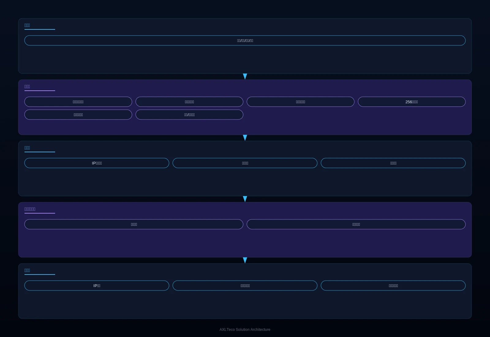

面向办公楼、商场、酒店、学校、医院等公共建筑，提供基于 IP 网络的广播及背景音乐解决方案，解决传统广播系统分区控制弱、音质衰减严重、与消防系统脱节的核心痛点，实现一套系统覆盖日常广播、背景音乐与消防应急疏散。
方案概述
为公共建筑提供基于 IP 网络的高品质广播及背景音乐解决方案，解决传统模拟广播分区控制弱、音质衰减、与消防系统脱节的问题，实现日常广播、背景音乐与消防应急疏散的一体化管控。
适用对象：办公楼、商场、酒店、学校、医院、车站、机场等公共场所。
- 基于 IP 网络，部署灵活，扩展方便
- 数字传输音质清晰，无衰减
- 256 个独立分区精细控制
- 与消防系统深度联动，紧急情况下自动切换
收益：一套系统替代多套独立系统，降低建设成本；数字化管理提升运营效率；消防联动保障人员生命安全。
业务挑战
在办公楼、商场、学校、医院等公共建筑运营中，客户常面临广播系统建设分散、音质衰减、消防联动缺失的问题，亟需一套可分区精细控制且与消防系统深度联动的 IP 网络广播系统。
多套系统重复建设
背景音乐、业务广播、消防广播各自独立，设备冗余、成本高昂。
模拟传输音质衰减
传统模拟广播长距离传输后音质下降，音量不均衡。
分区控制粗放
无法实现按楼层、按区域的独立音量与内容控制。
应急响应存在风险
火灾发生时需人工切换广播模式，延误疏散时机，构成安全隐患。
一体化广播平台
需要一套系统同时承载日常广播、背景音乐与应急疏散。
消防深度联动
需要火灾信号触发时自动切换疏散广播，无需人工干预。
典型场景：
适用角色：物业管理人员、消防值班人员、广播管理员。
方案架构
采用“音源-传输-播放-控制”四层网络架构，覆盖分区播放、定时任务与紧急广播核心模块，支持与消防报警系统深度联动及 PC/手机远程控制。

音源层提供节目与消防信号入口，经 IP 网络数字传输至各分区扬声器，控制层可视化编排节目、定时任务与分级权限，火灾信号触发时全链路自动切换为疏散广播。
核心模块
网络音源管理
音频服务器统一管理节目源，支持远程播控。
256 分区精细控制
按楼层、区域独立控制音量与内容，互不干扰。
消防联动切换
火灾信号自动触发疏散广播，抢占最高优先级。
定时任务与一键广播
上下课铃声、定时节目自动执行，突发事件一键全呼。
远程管理
PC 端与手机端远程控制，随时随地管理广播。
集成能力：
- 与消防报警系统深度联动，火灾信号触发自动切换疏散广播
- 支持 PC 端/手机端远程控制
- 支持定时任务和一键广播
优势与交付
我们以 IP 网络广播平台与消防联动能力，为公共建筑提供一套系统替代多套系统的建设方式，并通过勘察设计、布线安装、调试培训与质保运维保障落地。
差异化优势
一套系统三种用途
同时满足背景音乐、业务广播和紧急疏散需求。
256 个独立分区
不同区域播放不同内容，控制精细到楼层。
消防自动联动
火灾时自动切换疏散广播，无需人工干预。
远程移动管理
PC 与手机端远程控制，运维便捷。
客户价值：一套系统替代多套独立系统，降低建设成本；数字化管理提升运营效率；消防联动保障人员生命安全。
实施流程
需求调研
梳理建筑分区、广播用途与消防联动要求。
方案设计
输出分区方案、点位设计与设备清单。
网络布线
依托 IP 网络或专用线路完成传输链路铺设。
设备安装
扬声器、音源与控制设备安装到位。
系统调试
分区、定时任务与消防联动联调测试。
培训交付
培训广播管理员与消防值班人员后交付。
服务保障：一年质保，远程诊断支持，备件本地供应。